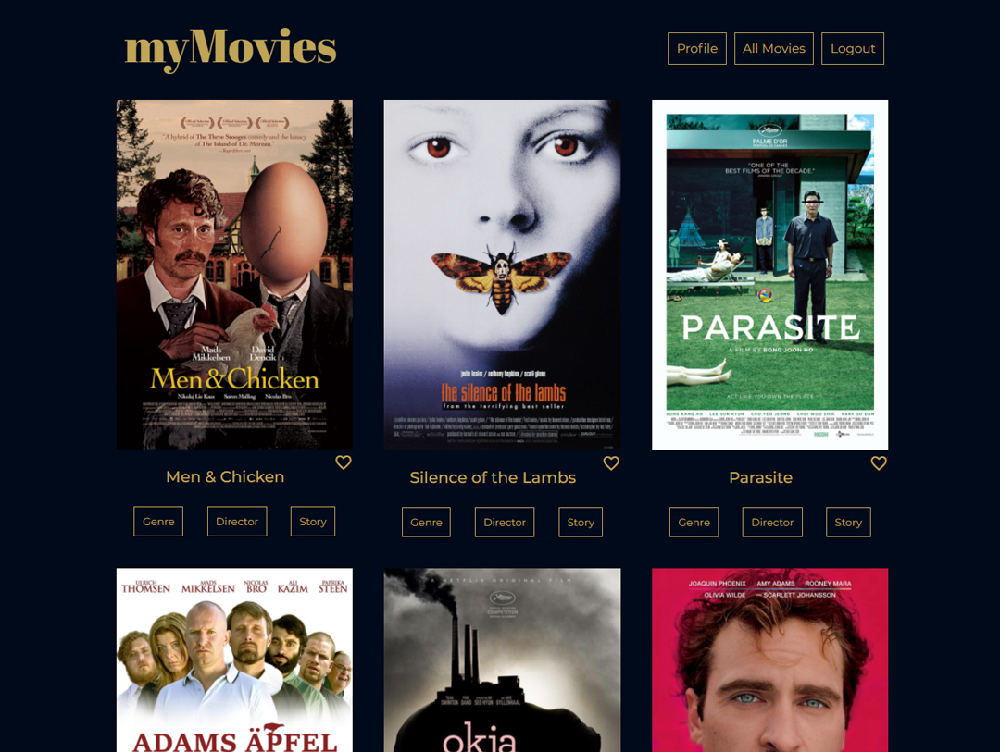
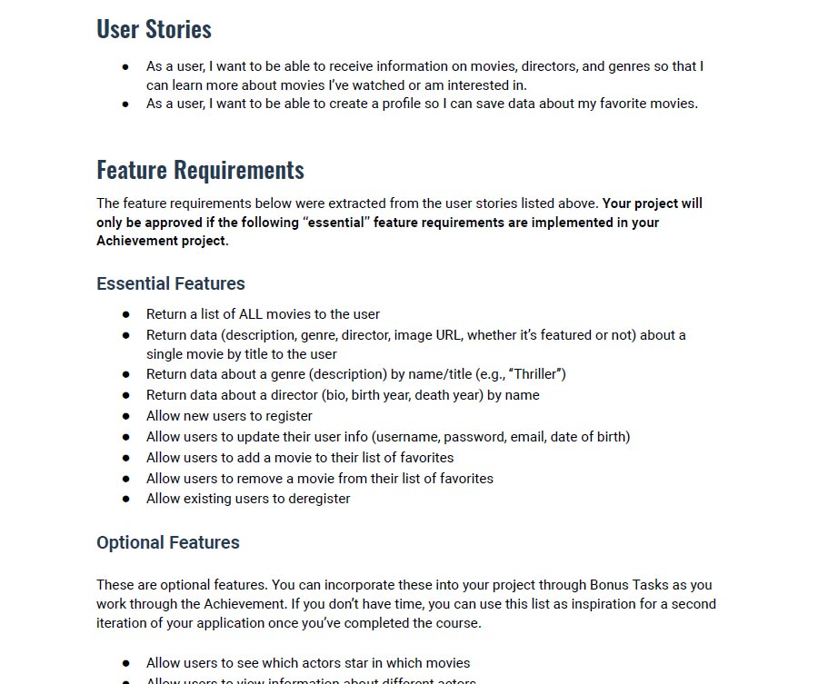
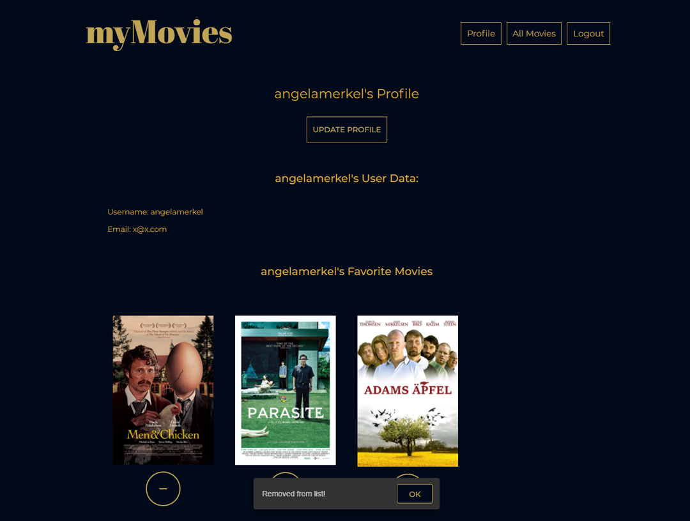
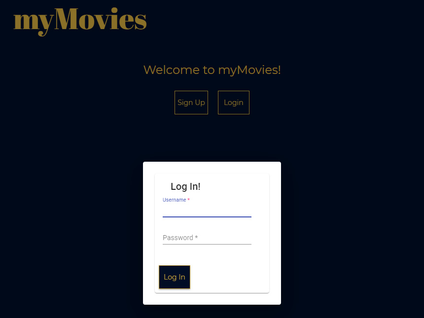
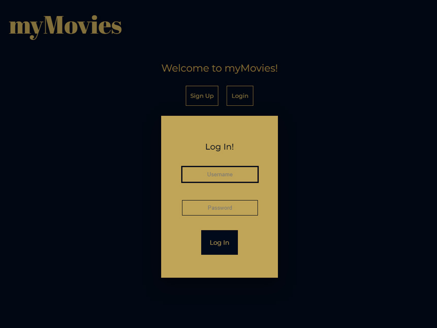
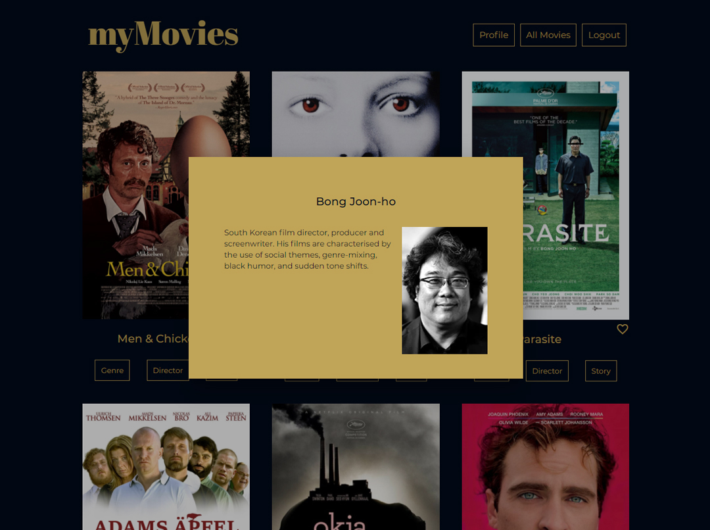

myMovies App (Angular)
Case Study
Über das Projekt
myMovies Angular war ein Projekt, um erste Einblicke in Angular zu gewinnen.
Die App bietet ähnliche Funktionen wie das React-Projekt: Informationen
zu Filmen, Regisseuren und Genres.
Nutzer können ein Profil erstellen, ihre Daten aktualisieren und ihre Lieblingsfilme speichern.
Das Projekt umfasste die Nutzung einer RESTful API sowie der für das React-Projekt erstellten Datenbank
und die Entwicklung der Client-Seite mit Angular und Angular Material.

myMovies App in Benutzung
Ziel
Ziel des Projekts war die Entwicklung einer Webanwendung auf Basis von Full-Stack-JavaScript-Technologien,
um sie in meinem Portfolio zu präsentieren.
Die zu lösende Aufgabe bestand darin, die Client-Seite mit Angular zu implementieren.
Dies sollte durch den Nachbau der bestehenden React-Anwendung erreicht werden, um einen direkten
Vergleich zu ermöglichen.
Zudem wollte ich mich eng an der Benutzeroberfläche der ursprünglichen Anwendung orientieren,
um zu lernen, wie man die Elemente von Angular Material anpasst.

Screenshot der fertigen App (main view mit movie list)
Kontext
Die Anwendung „myMovies“ entstand im Rahmen des Webentwicklungskurses bei CareerFoundry mit dem Ziel,
Fähigkeiten in Angular zu erwerben, eine Verbindung zu einer selbst erstellten API herzustellen und
Angular Material für die Benutzeroberfläche zu implementieren.
aufgabe beschrieb die Funktionen und Anforderungen präzise, und die Übungen waren so strukturiert,
dass sie diesen Vorgaben folgten.

Projektbeschreibung Careerfoundry (Quelle: Careerfoundry)
Approach
Um eine App zu entwickeln, die Filmfans mit Informationen versorgt, war eine Client-Seite erforderlich, die über die Benutzeroberfläche verfügt, damit die Fans mit all diesen Informationen interagieren können.

Erstellen der Endpunkte in der API
1. Schritt: Erstelle die Komponenten
Die Komponenten wurden automatisch mithilfe des folgenden Befehls in der CLI erstellt:
ng generate component
2. Schritt: Erstellen der Benutzeroberfläche
Für die Benutzeroberfläche wurde Angular Material verwendet.
Ich habe einige Flags für Schaltflächen und Formularelemente entfernt,
um zu experimentieren und zu verstehen, wie die Dinge funktionieren
und wie sich Elemente anpassen lassen.
Main view mit movie list

Während der Arbeit am Login-Modal

Arbeit am Login-Modal: das aktualisierte Design

Modal-Fenster mit Details zum Filmregisseur
Willkommensansicht mit Filmliste